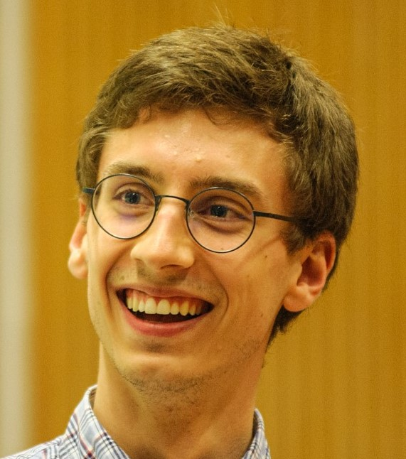

FNRS PhD Research Fellow - Scholar
Hello! My name is Simon Mataigne and I am a passionate engineer in applied mathematics. I graduated from UCLouvain, Belgium, in 2023 and I am currently PhD student at the same university. My work is supervised by Pierre-Antoine Absil (UCLouvain) and Nina Miolane (UC Santa Barbara). My work is funded by the Fonds de la Recherche Scientifique - F.R.S.-FNRS.
My research interests are about matrix manifolds, numerical linear algebra and optimization. I am particularly interested in computational and theoretical questions regarding the Riemannian logarithm on the Stiefel manifold and eigenvalue problems of normal matrices.
I am a member of the Society for Industrial and Applied Mathematics (SIAM) and the International Linear Algebra Society (ILAS).
You can reach me at simon.mataigne@uclouvain.be.